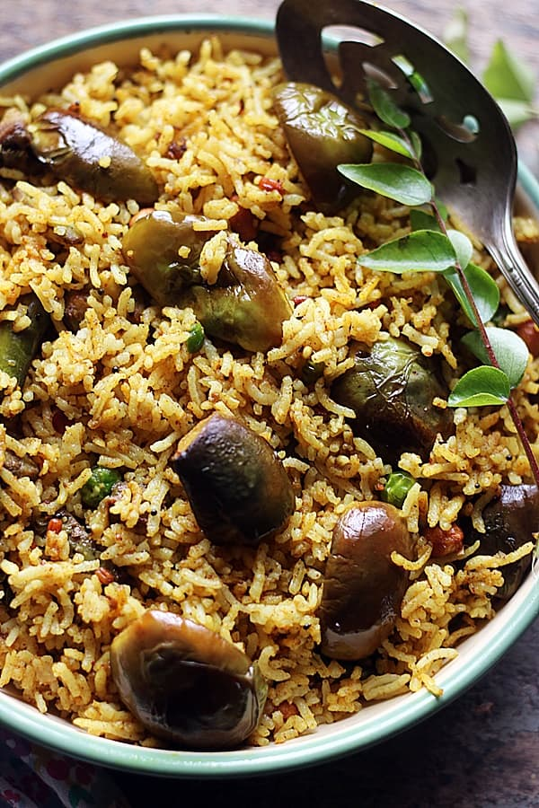

Vangi Bath

Vangi Bath is a delicious South Indian rice dish made with brinjal (eggplant) and a unique blend of spices. It’s a perfect one-pot meal that combines the richness of brinjal with fragrant rice and spices, often enjoyed with yogurt or pickle.
Ingredients:
- For Rice:
- 1 cup rice (preferably basmati)
- 2 cups water
- 1/2 teaspoon salt
- For Vangi Bath Powder:
- 1 tablespoon chana dal (split chickpeas)
- 1 tablespoon urad dal (split black gram)
- 1 teaspoon coriander seeds
- 1 teaspoon cumin seeds
- 1/4 teaspoon fenugreek seeds
- 2 dried red chilies
- 1/2 teaspoon black pepper
- 1 tablespoon desiccated coconut (optional)
- For Tempering:
- 1 tablespoon oil
- 1/2 teaspoon mustard seeds
- 1/4 teaspoon asafoetida (hing)
- 1/2 teaspoon turmeric powder
- 1 sprig curry leaves
- 1-2 green chilies, slit
- 1/2 cup chopped brinjal (eggplant)
- 1 tablespoon tamarind paste
- 1 tablespoon jaggery or sugar (optional)
- Other Ingredients:
- Chopped coriander leaves for garnish
- 1 tablespoon lemon juice (optional)
Instructions:
-
Cook the Rice:
- Wash the rice thoroughly. In a pot or rice cooker, cook the rice with 2 cups of water and salt until it’s soft but not mushy. Set aside to cool slightly.
-
Prepare Vangi Bath Powder:
- Dry roast chana dal, urad dal, coriander seeds, cumin seeds, fenugreek seeds, red chilies, and black pepper in a pan until they turn golden brown.
- Allow the mixture to cool and grind it into a fine powder. Add desiccated coconut (if using) and mix well. Set aside.
-
Prepare the Tempering:
- Heat oil in a pan. Add mustard seeds and let them splutter.
- Add asafoetida, turmeric powder, curry leaves, and green chilies. Sauté for a minute.
- Add chopped brinjal and cook until it softens (around 5-7 minutes). Add tamarind paste, jaggery (if using), and salt to taste. Stir well and cook for another 2 minutes.
-
Combine Rice and Spices:
- Add the prepared Vangi Bath powder to the brinjal mixture. Stir well and cook for another 2 minutes.
- Finally, add the cooked rice and mix gently to combine all the ingredients. Adjust the seasoning if needed.
-
Serve:
- Garnish with chopped coriander leaves and serve hot with yogurt or pickle.
Serving:
Vangi Bath is a flavorful and aromatic dish that's perfect for a hearty lunch or dinner. It pairs well with a side of raita or pickle for extra tanginess.😊